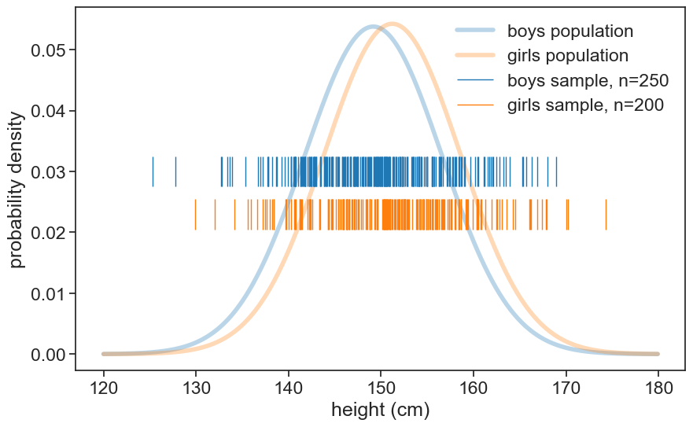

4 independent samples t-test
4.1 Question
Are 12-year old girls significantly taller than 12-year old boys?
4.2 Hypotheses
- Null hypothesis: Girls and boys have the same mean height.
- Alternative hypothesis: Girls are significantly taller.
- Significance level: 0.05
load data
df_boys = pd.read_csv('../archive/data/height/boys_height_stats.csv', index_col=0)
df_girls = pd.read_csv('../archive/data/height/girls_height_stats.csv', index_col=0)
age = 12.0
mu_boys = df_boys.loc[age, 'mu']
mu_girls = df_girls.loc[age, 'mu']
sigma_boys = df_boys.loc[age, 'sigma']
sigma_girls = df_girls.loc[age, 'sigma']In this example, we sampled 10 boys and 14 girls. See below the samples data and their underlying distributions.
Show the code
height_list = np.arange(120, 180, 0.1)
pdf_boys = norm.pdf(height_list, loc=mu_boys, scale=sigma_boys)
pdf_girls = norm.pdf(height_list, loc=mu_girls, scale=sigma_girls)
fig, ax = plt.subplots(figsize=(10, 6))
ax.plot(height_list, pdf_boys, lw=4, alpha=0.3, color='tab:blue', label='boys population')
ax.plot(height_list, pdf_girls, lw=4, alpha=0.3, color='tab:orange', label='girls population')
ax.eventplot(sample_boys, orientation="horizontal", lineoffsets=0.03,
linewidth=1, linelengths= 0.005,
colors='tab:blue', label=f'boys sample, n={N_boys}')
ax.eventplot(sample_girls, orientation="horizontal", lineoffsets=0.023,
linewidth=1, linelengths= 0.005,
colors='tab:orange', label=f'girls sample, n={N_girls}')
ax.legend(frameon=False)
ax.set(xlabel='height (cm)',
ylabel='probability density',
)
To answer the question, we will use an independent samples t-test.
\begin{align} t &= \frac{\bar{X}_1 - \bar{X}_2}{\Theta} \\ \Theta &= \sqrt{\frac{s_1^2}{n_1} + \frac{s_2^2}{n_2}} \end{align}
This is a generalization of the one-sample t-test. If we take one of the samples to be infinite, we get the one-sample t-test.
We can compute the t-statistic by ourselves, and compare the results with those of scipy.stats.ttest_ind. Because we are interested in the difference between the means, we will use the equal_var=False option to compute Welch’s t-test. Also, because we are testing the alternative hypothesis that girls are taller, we will use the one sided test.
Show the code
Theta = np.sqrt(sample_boys.std(ddof=1)**2/sample_boys.size + \
sample_girls.std(ddof=1)**2/sample_girls.size)
t_stat = (sample_boys.mean() - sample_girls.mean()) / Theta
dof = N_boys + N_girls - 2
p_val = t.cdf(t_stat, dof)
# the option alternative="less" is used because we are testing whether the first sample (boys) is less than the second sample (girls)
t_value_scipy = ttest_ind(sample_boys, sample_girls, equal_var=False, alternative="less")
print(f"t-statistic: {t_stat:.3f}, p-value: {p_val:.3f}")
print(f"t-statistic (scipy): {t_value_scipy.statistic:.3f}, p-value (scipy): {t_value_scipy.pvalue:.3f}")t-statistic: -0.999, p-value: 0.164
t-statistic (scipy): -0.999, p-value (scipy): 0.165We got the exact same results :)
Now let’s visualize what the p-value means.
visualize t-distribution
# degrees of freedom
fig, ax = plt.subplots(figsize=(10, 6))
t_array_min = np.round(t.ppf(0.001, dof),3)
t_array_max = np.round(t.ppf(0.999, dof),3)
t_array = np.arange(t_array_min, t_array_max, 0.001)
# annotate vertical array at t_value_scipy
ax.annotate(f"t value = {t_value_scipy.statistic:.3f}",
xy=(t_value_scipy.statistic, 0.25),
xytext=(t_value_scipy.statistic, 0.35),
fontsize=14,
arrowprops=dict(arrowstyle="->", lw=2, color='black'),
ha='center')
# fill between t-distribution and normal distribution
ax.fill_between(t_array, t.pdf(t_array, dof),
where=(t_array < t_value_scipy.statistic),
color='tab:blue', alpha=0.5,
label='rejection region')
# write t_value_scipy.pvalue on the plot
ax.text(0, 0.05,
f"p value = {t_value_scipy.pvalue:.3f}",
ha='center', va='bottom',
bbox=dict(facecolor='tab:blue', alpha=0.5, boxstyle="round"))
ax.plot(t_array, t.pdf(t_array, dof),
color='black', lw=2)
ax.set(xlabel='t',
ylabel='probability density',
title="t-distribution (dof=22)",
);
Because the p-value is higher than the significance level, we fail to reject the null hypothesis. This means that, based on the data, we cannot conclude that girls are significantly taller than boys.
4.3 increasing sample size
Let’s increase the sample size to see how it affects the p-value. We’ll sample 250 boys and 200 girls now.
Show the code
height_list = np.arange(120, 180, 0.1)
pdf_boys = norm.pdf(height_list, loc=mu_boys, scale=sigma_boys)
pdf_girls = norm.pdf(height_list, loc=mu_girls, scale=sigma_girls)
fig, ax = plt.subplots(figsize=(10, 6))
ax.plot(height_list, pdf_boys, lw=4, alpha=0.3, color='tab:blue', label='boys population')
ax.plot(height_list, pdf_girls, lw=4, alpha=0.3, color='tab:orange', label='girls population')
ax.eventplot(sample_boys, orientation="horizontal", lineoffsets=0.03,
linewidth=1, linelengths= 0.005,
colors='tab:blue', label=f'boys sample, n={N_boys}')
ax.eventplot(sample_girls, orientation="horizontal", lineoffsets=0.023,
linewidth=1, linelengths= 0.005,
colors='tab:orange', label=f'girls sample, n={N_girls}')
ax.legend(frameon=False)
ax.set(xlabel='height (cm)',
ylabel='probability density',
)
Show the code
Theta = np.sqrt(sample_boys.std(ddof=1)**2/sample_boys.size + \
sample_girls.std(ddof=1)**2/sample_girls.size)
t_stat = (sample_boys.mean() - sample_girls.mean()) / Theta
dof = N_boys + N_girls - 2
p_val = t.cdf(t_stat, dof)
# the option alternative="less" is used because we are testing whether the first sample (boys) is less than the second sample (girls)
t_value_scipy = ttest_ind(sample_boys, sample_girls, equal_var=False, alternative="less")
print(f"t-statistic: {t_stat:.3f}, p-value: {p_val:.3f}")
print(f"t-statistic (scipy): {t_value_scipy.statistic:.3f}, p-value (scipy): {t_value_scipy.pvalue:.3f}")t-statistic: -2.639, p-value: 0.004
t-statistic (scipy): -2.639, p-value (scipy): 0.004We found now a p-value lower than the significance level, so we reject the null hypothesis. This means that, based on the data, we can conclude that girls are significantly taller than boys.